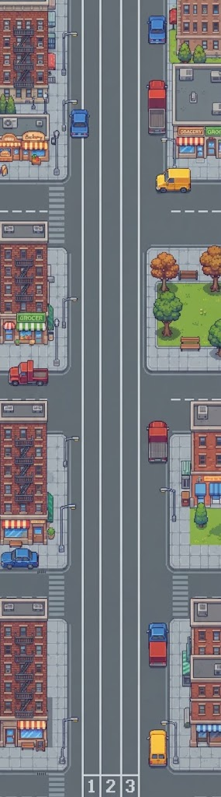

Clean Runner: Fair Play
Vzdělávací retro videohra o čistém sportu a antidopingu
📌 Účel a zaměření hry
Clean Runner je interaktivní arkádová hra vytvořená za účelem širší osvěty o pravidlech fair play, ochraně zdraví sportovců a fungování světového antidopingu (WADA). Hra hravou formou seznamuje hráče s reálnými situacemi, kterým čelí vrcholoví sportovci.
⚙️ Klíčové herní mechaniky a pravidla
- Princip striktní odpovědnosti: Sportovec nese plnou odpovědnost za každou látku, která se ocitne v jeho těle, bez ohledu na zavinění.
- Terapeutická výjimka (TUE): Unikátní dokument, který může sportovci v kritické chvíli zachránit kariéru před trestem.
- Odborná pomoc: Během závodu lze potkat sportovního lékaře nebo právníka, kteří pomohou se správnými odpověďmi v antidopingovém kvízu.
- Profily sportovců: Možnost volby mezi vytrvalcem (stabilní výdej sil) a silovým sportovcem (specifická regenerace).
🎮 Spustit hru
Kliknutím na obrázek nebo tlačítko níže vstoupíš do závodu:

▶ SPUSTIT HRU
VSTOUPIT DO ZÁVODU ➔